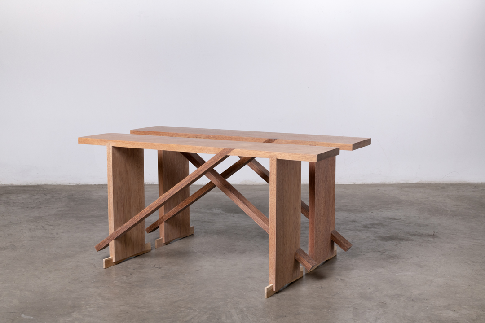
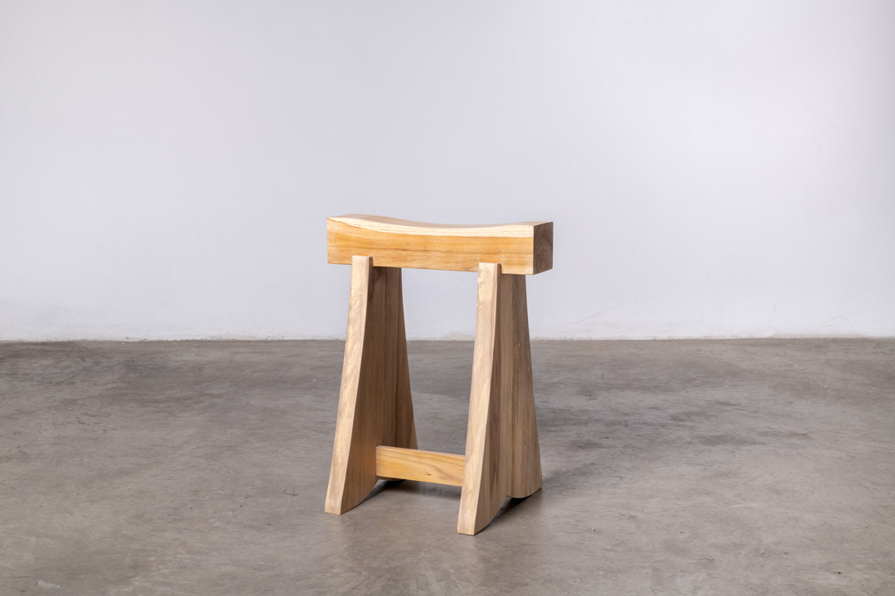

BANCA TALLER + BANCA TACÓN
2 bancas en edición con DTO (Departamento Temporal de los Objetos)
Fotografías:
Andrés Toquica
Encargos y lista de precios:
por favor contactar a Liliana Andrade
2022-
2 benches, an edition with DTO (Departamento Temporal de los objetos)
Photographs:
Andrés Toquica
Prices and requests:
please contact Liliana Andrade
2022-
Dos bancas editadas y producidas en una serie limitada como parte de las ediciones de objetos del DTO (Departamento Temporal de los Objetos).
Banca Taller
Una banca construida desde una lógica a la que regularmente se apela para armar superficies de trabajo y descanso en talleres o espacios de trabajo. El modelo inicial fue construído con retal de piso de una bodega. Sus dimensiones responden a las medidas de los tablones del piso. Madera: Achapo, Sapán y Guayacán.
Banca Tacón
Una banca parada en unos tacones. Madera: Caracolí, Solera, Guayacán, y Teca.
Two benches produced in a limited series as part of the edition of objects of DTO (Departamento Temporal de los Objetos).
Banca Taller (Workshop bench)
A type of bench regularly built in workshops to be used as a surface for work or rest. The first model was constructed using leftovers from the floorboards of a warehouse. The dimensions of this bench are related to the size of the floorboards used. Wood: Achapo, Sapán and Guayacán
Banca Tacón (Heel bench)
A bench that stands on two heels. Wood: Caracolí, Solera, Guayacán and Teak.
Banca Taller
Banca Tacón
